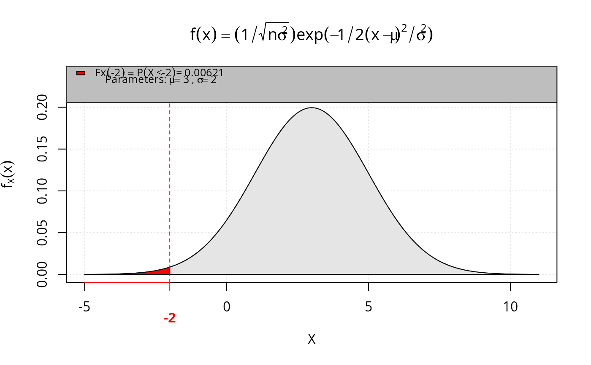

P Compute the cumulative distribution function for multiple distributions
Usage
P(
q,
dist = "normal",
lower.tail = TRUE,
rounding = 5,
porcentage = FALSE,
gui = "plot",
main = NULL,
...
)Arguments
- q
quantile. The
qargument can have length 1 or 2. See Details.- dist
distribution to use. The default is
'normal'. Options:'normal','t-student','gumbel','binomial','poisson', and ....- lower.tail
logical; if
TRUE(default), probabilities are \(P[X \leq x]\) otherwise, \(P[X > x]\). This argument is valid only ifqhas length 1.- rounding
numerical; it represents the number of decimals for calculating the probability.
- porcentage
logical; if
FALSE(default), the result in decimal. Otherwise, probability is given in percentage.- gui
default is
'plot'; it graphically displays the result of the probability. Others options are:'none','rstudio'or'tcltk'.- main
defalt is
NULL; it represents title of plot.- ...
additional arguments according to the chosen distribution.
Value
P returns the probability and its graphical representation. The result can be given as a percentage or not.
Details
The argument that can have length 2, when we use the functions that give us the probability regions, given by: %<X<%, %<=X<%, %<X<=%, %<=X<=%, %>X>%, %>X=>%, %>X=>% and %>=X=>%.
The additional arguments represent the parameters of the distributions, that is:
If
dist = "normal"(Default); the additional arguments are:mean(\(\mu\)) andsd(\(\sigma\)). The PDF is given by: $$\displaystyle{\frac {1}{\sqrt {2\pi \sigma ^{2}}}}e^{-{\frac {(x-\mu )^{2}}{2\sigma ^{2}}}}, \quad \mu \in \mathbb{R},~\sigma^2 > 0;$$If
dist = "t-student"; the additional argument is:df(\(\nu\)). The PDF is given by: $$\displaystyle{\frac {\Gamma \left({\frac {\ \nu +1\ }{2}}\right)}{{\sqrt {\pi \ \nu \ }}\ \Gamma \left({\frac {\nu }{\ 2\ }}\right)}}\left(\ 1+{\frac {~x^{2}\ }{\nu }}\ \right)^{-{\frac {\ \nu +1\ }{2}}}, \quad \nu > 1;$$If
dist = "chisq"; the additional argument is:df(\(\nu\)). The PDF is given by: $$\displaystyle{\frac {1}{2^{k/2}\Gamma (k/2)}}\;x^{k/2-1}e^{-x/2}, \quad \nu > 0;$$
Examples
# Loading package
library(leem)
# Example 1 - Student's t distribution
if (FALSE) { # \dontrun{
P(q = 2, dist = "t-student", df = 10)
P(q = 2, dist = "t-student", df = 10, gui = 'rstudio')
P(q = 2, dist = "t-student", df = 10, gui = 'tcltk')
P(-1 %<X<% 1, dist = "t-student", df = 10)
} # }
# Example 2 - Normal distribution
P(-2, dist = "normal", mean = 3, sd = 2,
main = expression(f(x) == (1 / sqrt(n * sigma^2)) *
exp(-1/2 * (x - mu)^2/sigma^2)))

#> [1] 0.00621